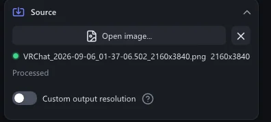
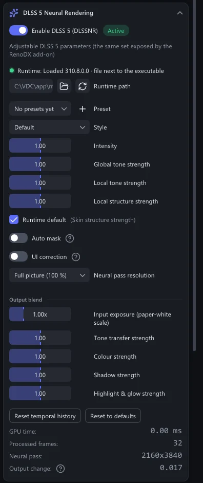
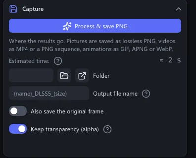
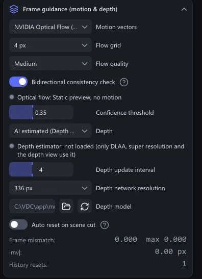
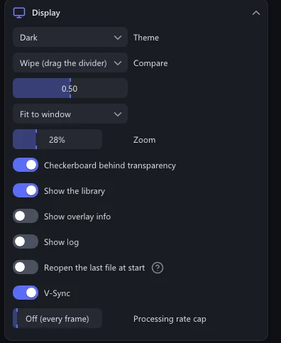
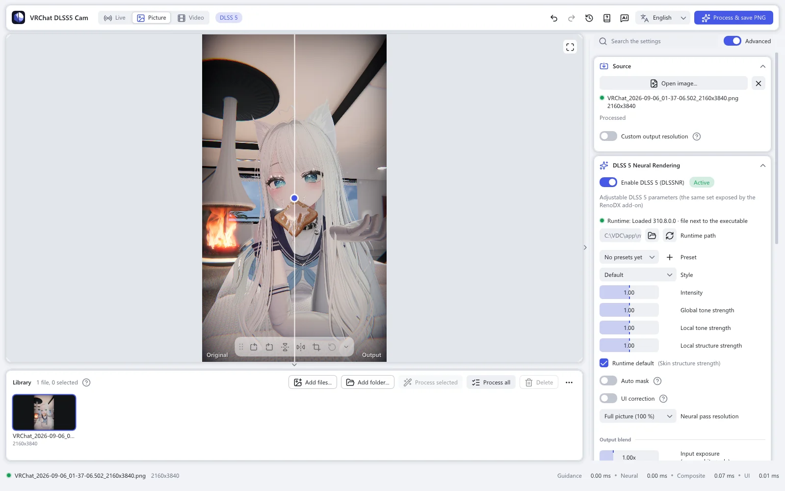
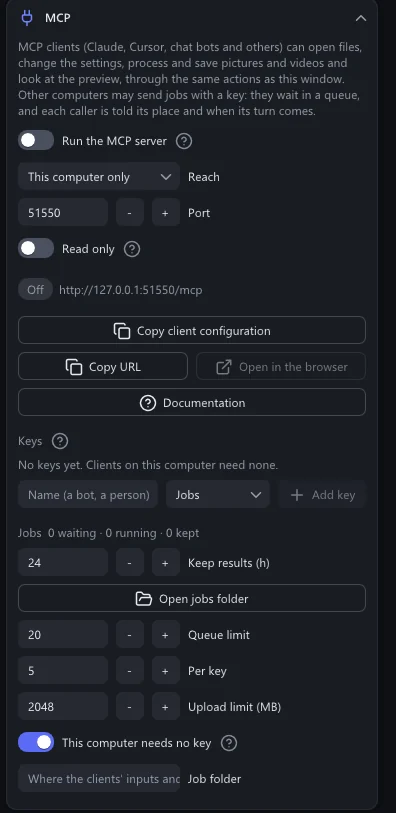
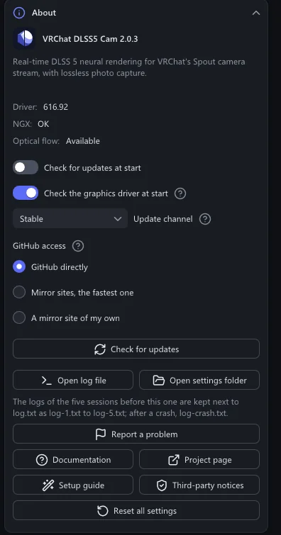

Reference
All settings
Every control in the sidebar, section by section, in the order the app shows them.
On this page
The sidebar's sections, from top to bottom: Source, DLSS 5 Neural Rendering, Capture, Frame guidance (motion & depth), DLAA pre-pass, Display, MCP, Internals and About. A click on a section's title folds it.
Controls marked Advanced show only while the Advanced switch at the top of the sidebar is on. It is on at first. Turned off, the sidebar keeps only what a first picture needs.
Source
What comes in, and in what size and format it goes out.


| Setting | What it does |
|---|---|
| Spout sender | Live mode: whose picture to receive. Auto (VRChat) finds VRChat's camera. Refresh looks for senders again. |
| Open image... · Open video... | Picture and video mode: open a file. The ✕ next to it closes the file; the file stays in the library. |
| Custom output resolution | Save at a size other than the source's. Set Width and Height; Keep aspect ratio keeps the shape. Larger than the source is an upscale, smaller a downscale. |
| Upscaling | How the picture grows. DLSS super resolution: NVIDIA's upscaler rebuilds the detail, then DLSS 5 works on the large picture. Much slower, and needs more video memory. Resampling (Catmull-Rom): a plain filter. |
| Match the source | Videos. On at first: the result takes the format, frame rate and bitrate of the source. An animated GIF, APNG or WebP comes back in its own format with its loop count. |
| Save as | With Match the source off: MP4 (H.264), MP4 (HEVC), PNG sequence, GIF, APNG or WebP. Which to choose |
| Bitrate | MP4: the average bitrate, 5 to 200 Mbit/s. 40 keeps 4K nearly free of compression marks. |
| Keep audio | MP4: copy the sound into the result. |
| WebP quality | Animated WebP: 50 to 100. Higher is better and larger; 100 is lossless. |
| Hardware decoding | Advanced Decode videos on the graphics card. Turn it off when a file does not open or shows wrong colours. |
| Paper white · Highlight compression | Only for an HDR (floating-point) Spout picture: the value that becomes white, and how softly brighter values roll off. |
DLSS 5 Neural Rendering
How the result looks.


| Setting | What it does |
|---|---|
| Enable DLSS 5 (DLSSNR) | Turns DLSS 5 on or off. The badge says Active while it runs. Off frees the runtime and its video memory; on loads it again. |
| Neural pass only for captures | Advanced Live mode, for cards too slow for a live preview. The preview shows the plain picture and the card rests. A photo first runs DLSS 5 on 16 fresh frames, then saves. Still pictures are not affected. |
| Runtime path · Reload | The DLSS 5 runtime file. Empty uses the build included for your card. Reload loads it again. |
| Preset | Your saved looks. + saves the current values. Presets |
| Style | Default, Natural or Cinematic. |
| Intensity | 0 to 2. 1 is the runtime's own look, 0 leaves the picture untouched. Above 1 the app amplifies the change, which can also amplify flaws. |
| Global tone strength | Advanced How much DLSS 5 may change the overall exposure and colour. 0 to 2; above 1 the app amplifies, as with Intensity. |
| Local tone strength | Advanced Local contrast and lighting. Same range and rule. |
| Local structure strength | Advanced Fine detail and texture. Same range and rule. |
| Skin structure strength | Advanced Detail on skin. Runtime default leaves it to the model. |
| Auto mask | Advanced Lets the runtime mask areas it should not change. |
| UI correction | Advanced Protects flat, interface-like areas from being changed. |
| Neural pass resolution | Advanced Full picture (100 %), a cap such as Long edge up to 1440 px, or a share such as 50 % of the picture. A smaller pass is lighter on the card; its change is added to the full-size picture, and the finest detail is lost. |
| Input exposure (paper-white scale) | Advanced Output blend. 0.25 to 4×. Brightens or darkens the picture for the network only; the result keeps the original brightness. A brighter input is relit more gently. |
| Tone transfer strength | Advanced Output blend. How much of the brightness change reaches the result. 0 keeps the original, 1 is as rendered, 2 exaggerates. |
| Colour strength | Advanced Output blend. The same for colour (hue and saturation). |
| Shadow strength | Advanced Output blend. The same for darkening: shadows and contours. |
| Highlight & glow strength | Advanced Output blend. The same for brightening: highlights, reflections, glow. |
| Reset temporal history | Clears what DLSS 5 remembers of earlier frames. |
| Reset to defaults | Puts the DLSS 5 values back to the start. |
| GPU time · Processed frames · Neural pass · Output change | Advanced Readouts. Output change says how much DLSS 5 changed the picture; the app warns when the runtime reports success but returns a black or unchanged picture. |
Capture
Where results go, and how they are named.


| Setting | What it does |
|---|---|
| Capture photo · Process & save PNG · Process & save video | Saves. The label follows the mode. |
| Estimated time | Pictures and videos: roughly how long the save takes on this card. It gets more exact with every run. |
| Folder | Where everything is saved. Empty: Pictures\VRChat DLSS5 Cam. Browse… picks a folder, Open shows it. |
| File name · Output file name | The name template, for live photos and for pictures and videos. Words you can use |
| Also save the original frame | Also saves the picture as it came in, before DLSS 5. |
| Keep transparency (alpha) | Advanced Keeps a transparent background. On at first. |
| Global hotkey | Live mode: the keys that save a photo while VRChat is in front. Ctrl+Alt+P at first; tick Ctrl, Alt, Shift or Win and pick the Key. |
| Auto capture every (seconds) | Live mode: saves a photo at this interval. 0 = off. |
Frame guidance (motion & depth)
Advanced The whole section. What DLSS 5 is told about motion, and the depth used by DLAA, super resolution and the depth view. How it works


| Setting | What it does |
|---|---|
| Motion vectors | NVIDIA Optical Flow (hardware, recommended), FSR optical flow (compute, any card), GPU block matching (built-in) or None (zero). |
| Flow grid · Flow quality | NVIDIA Optical Flow: the spacing of the vectors and the engine's speed setting. 4 px is fastest; 2 px and 1 px are finer and much slower at 4K. |
| Search radius | FSR optical flow and block matching: how far the search looks. Larger follows faster motion and takes longer. |
| Bidirectional consistency check | Also measures the motion backwards, and trusts the vectors less where the two directions disagree. Recommended. |
| Confidence threshold | Vectors below this confidence are weakened. |
| Depth | AI estimated (Depth Anything V2), Flat, Gradient (placeholder) or Zero. DLSS 5 does not read it. The network loads only while DLAA, super resolution or the depth view needs it. |
| Depth update interval | Runs the depth network every N frames; in between, the depth follows the motion. |
| Depth network resolution | The long side of the picture the depth network sees. Larger gives finer edges and is slower. |
| Depth model | The model file. Empty uses the one included. |
| Auto reset on scene cut | Clears the temporal history when the picture changes sharply. Off at first: DLSS 5 recovers by itself, and every reset shows as a jump. |
| Cut threshold | How large a change counts as a scene cut. |
DLAA pre-pass
Advanced The whole section.
| Setting | What it does |
|---|---|
| Run DLSS DLAA before neural rendering | NVIDIA's anti-aliasing at the picture's own size, before DLSS 5. Smooths edges and costs GPU time. GeForce only, off at first. While DLSS super resolution is in use, this pass is already part of it. |
| DLSS preset | The DLSS model letter. K is the default. |
Display
How the window shows things. None of these change the saved files.


| Setting | What it does |
|---|---|
| Theme | System follows Windows, or choose Dark or Light. |
| Compare | DLSS 5 output, Original, Wipe (drag the divider), Motion vectors or Depth. |
| Fit to window · 1:1 pixels | The whole picture in the window, or one screen pixel per picture pixel. |
| Zoom | The magnification. The mouse wheel over the picture zooms around the pointer, dragging moves, a double-click fits again. |
| Checkerboard behind transparency | Shows transparent parts as a checkerboard. |
| Show the library | The library under the picture. |
| Show overlay info | Sizes and state written over the picture. |
| Show log | The app's log lines in the window. |
| Reopen the last file at start | Opens the file of the last session again. Off at first. |
| V-Sync | Advanced Draws the window in step with the screen. |
| Processing rate cap | Advanced Live mode: process at most this many frames per second. Off (every frame) at first. Leaves the card free for VRChat. |


MCP
Lets an MCP client, or a program on another computer, work the app. Off at first. MCP


| Setting | What it does |
|---|---|
| Run the MCP server | Starts the server whenever the app runs. |
| Reach | This computer only, or Local network with a key per client. |
| Port · Read only | The TCP port, and whether clients may only look. |
| Keys · Jobs | The keys other computers use, and the queue of their jobs. |
Internals
Advanced The whole section.
| Setting | What it does |
|---|---|
| GPU timings | The time each pass takes on the card: convert, guidance, optical flow, DLAA, neural pass, composite, and the interface. |
About
The version, updates, and help.


| Setting | What it does |
|---|---|
| Check for updates at start | Looks for a new version at every start. On at first. Updates |
| Check the graphics driver at start | Tells you at start when the GeForce driver is older than DLSS 5 needs (616.56). On at first. |
| Update channel | Stable or Pre-release. |
| GitHub access | GitHub directly, Mirror sites, the fastest one, or A mirror site of my own. Measure the sites tests them. |
| Check for updates | Looks right away. |
| Open log file · Open settings folder | The log of this session, and the folder with the settings, presets and older logs. |
| Report a problem | Opens GitHub's issue form, filled in with the app version and your graphics card. |
| Documentation · Project page | These pages, and the project on GitHub. |
| Setup guide | Shows the first-start guide again. |
| Third-party notices | The licences of the parts the app uses. |
| Reset all settings | Every setting back to the start. It asks first. |
| Get the Radeon edition… · Get the GeForce edition… | Shows up when the app runs on the other maker's card. Downloads the matching edition and swaps to it; settings and library stay. |
The settings live in %LOCALAPPDATA%\VRChatDLSS5Cam\settings.ini. The app's own folders